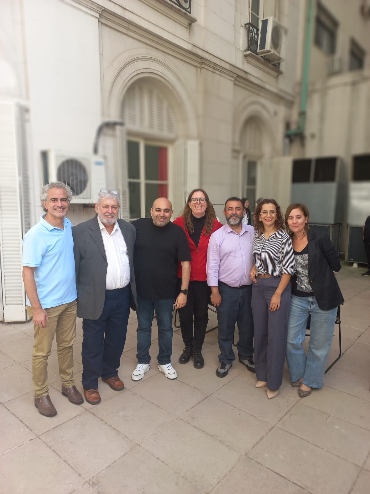

¿Qué necesito?
Revisa el equipo, los roles y la infraestructura para comenzar.
Ver requerimientos →Tecnología con propósito
En el mundo académico la información fluye rápido, pero, ¿está llegando realmente a todos?
Te presentamos Aiuda, una plataforma desarrollada para nosotros, los docentes universitarios, que utiliza Inteligencia Artificial local para facilitar la accesibilidad y mejorar nuestro material académico. Subtitula, transcribe y recibe recomendaciones de tus presentaciones con el apoyo de una IA local, sin que tus datos salgan de tu institución.
Conocer Aiuda →Activa Aiuda
Revisa el equipo, los roles y la infraestructura para comenzar.
Ver requerimientos →Conoce el proceso y consulta las guías de uso paso a paso.
Revisar las guías →Tu experiencia nos ayuda a mejorar la herramienta.
Evaluar Aiuda →Aiuda busca producir una mejora en el quehacer de la educación.
Utiliza inteligencia artificial para asistir en la producción y mejora de materiales educativos. Permite transcribir, traducir y subtitular contenidos, así como analizar presentaciones y generar recomendaciones de accesibilidad.
Ver presentación →Con una interfaz pensada en profesores, no en expertos, accede a todas las funciones de manera intuitiva y deja que la inteligencia artificial local haga el trabajo por ti.
Sube tus archivos a la plataforma y Aiuda te avisará por correo electrónico cuando el trabajo esté terminado.
Ver cómo se usa →Si ya lo usaste, te solicitamos compartir tu experiencia. Esto nos permitirá medir impacto y proponer sugerencias para su mejora.
Evaluar Aiuda →Acerca del proyecto
Aiuda asiste a docentes en la producción y mejora de materiales educativos mediante inteligencia artificial.
Permite transcribir, traducir y subtitular contenidos, analizar presentaciones y generar recomendaciones de accesibilidad. Su enfoque es claro: no reemplaza el trabajo docente ni automatiza decisiones pedagógicas.
Orienta, sugiere y señala. El criterio sigue estando en quienes enseñan.
Funciona dentro de la infraestructura de cada universidad, procesando los materiales localmente y sin enviar información a servicios externos.
Implementación
En esta guía encontrarás un resumen de lo necesario y algunas recomendaciones para que adoptar Aiuda en tu organización sea un proceso de una semana y sin problemas.
En esta guía te mostramos los requisitos de hardware, que es la única inversión financiera que deberías realizar, si es que no tienes un PC sin uso por ahí. Aiuda es un software de código abierto.
Guía de instalación, desde tu sistema operativo Linux funcionando, hasta que los docentes puedan comenzar a trabajar.
Guías prácticas
Tres pasos simples para transformar materiales educativos en contenidos más accesibles.
Una red internacional
Las personas detrás del proyecto

Detrás de cada gran proyecto hay una historia, y la del nuestro nació en el aula.
Nació al observar a esos docentes comprometidos que pasan horas adaptando sus materiales, y también al ver la frustración de aquellos estudiantes que, por una barrera visual, auditiva o de aprendizaje, se quedan rezagados en una clase diseñada para la mayoría, pero no para todos.
La verdadera inspiración de Aiuda llegó al entender una realidad innegable: la inclusión no es la falta de voluntad, sino la falta de tiempo y herramientas. Vimos a docentes excepcionales querer subtitular sus videos didácticos, pero verse frenados por software complejos que consumen horas de su descanso.
Vimos el deseo de maquetar presentaciones de PowerPoint (PPT) accesibles —con contrastes correctos, fuentes legibles y descripciones adecuadas—, pero sin saber bien por dónde empezar entre tanta teoría pedagógica.
Nos preguntamos: ¿cómo podemos ayudar a los docentes a incluir a todos sus alumnos sin que eso signifique triplicar su carga de trabajo?
La respuesta fue crear una herramienta tecnológica que actúa como un puente. Un aliado que automatiza lo complejo: subtitula videos en minutos y corrige o adapta presentaciones de diapositivas con un solo clic, asegurando que cumplan con los estándares de accesibilidad universal.
Este proyecto no nació solo para cumplir con una normativa de inclusión, sino para devolverle el tiempo a los profesores y garantizar el derecho a aprender de los estudiantes. Queremos que la accesibilidad deje de ser un “esfuerzo extra” y se convierta en el estándar natural de cada aula.
Los invitamos a conocer más sobre este camino y a sumarse a una educación donde nadie se quede atrás.
Atentamente,
Equipo Aiuda
Conversemos